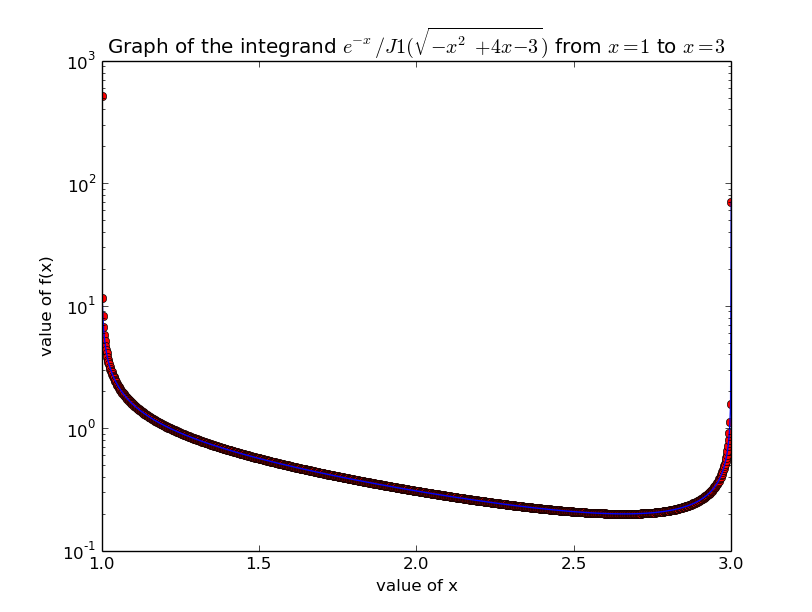
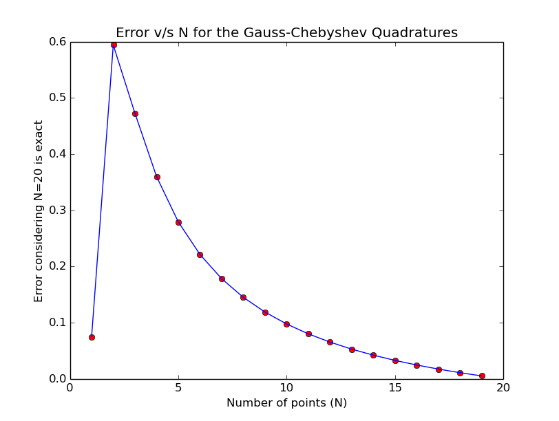

EE5011: Computer Methods in Electrical Engineering
Numerical Integration of Singular Integrals (Week 5)
Rohan Rao, EE14B118
1 Programming Assignment - Singular Integrals
J = 3⌠⌡1(e − x)/(J1(√( − x2 + 4x − 3)))dx
1.1 Graph the integrand in Python from x=1 to x=3
from scipy.special import jv
from pylab import *
def integrand(x):
return np.exp(-x)/jv(1,np.sqrt(-x**2+4*x-3))
#>>>>>>>Singular Integrals
#q1. Graphing the Integrand
eps=1e-6
x=linspace(1+eps,3-eps,1000)
semilogy(x,integrand(x),’ro’)
semilogy(x,integrand(x))
title(r’Graph of the integrand $e^{-x}/J1(\sqrt{-x^2+4x-3})$ from $x=1$ to $x=3$’)
xlabel("value of x")
ylabel("value of f(x)")
show()

The semilog plot above is obtained, showing the singularities at x=1 and x=3.
1.2 Integrate using scipy.quad
#q2. Using quad for evaluating the function
from scipy import integrate
print integrate.quad(integrand,1,3)
#OUTPUT: (1.140489938554265, 5.333975483523545e-10)
# n_evals: 567
1.3 Use Open Romberg to integrate and study the convergence
#q3. Using open Romberg for integration
import sing_intg as si
print si.qromo(integrand,1,3,eps=1e-5)
#requires 81 function calls
print si.qromo(integrand,1,3,eps=1e-6)
#requires 2187 function calls
print si.qromo(integrand,1,3,eps=1e-7)
#requires 531441 function calls
It can be seen that the number of function calls increases exponentially with decreasing order of magnitude of the required tolerance.
2 Programming Assignment - Gaussian Quadratures
2.1 Transform integral to (-1,1)
#q1. transform to -1 to 1.
# Let t = x-2
def f(t):
return np.exp(-t-2)*np.sqrt(1-t*t)/jv(1,sqrt(1-t**2))
#https://en.wikipedia.org/wiki/Chebyshev%E2%80%93Gauss_quadrature
#integral from -1 to 1 f(x)dx/sqrt(1-x^2)
Setting t=x-2 converts the limits to -1,1.
2.2 Evaluate using Gauss-Chebyshev quadratures
#q2. Gauss-Chebyshev Quadrature
def calcGQ(x,w):
sum=0.0
for i in range(len(x)):
sum+=f(x[i])*w[i]
return sum
x=np.array(range(20))
x=cos(np.pi*(x-0.5)/20)
print x
w=np.full(20,np.pi/20)
exactVal=calcGQ(x,w)
print exactVal
intvals=[]; errors=[]
for i in range(1,20):
x=np.array(range(i))
x=cos(np.pi*(x-0.5)/i)
w=np.full(i,np.pi/i)
intVal=calcGQ(x,w)
print intVal, intVal-exactVal
intvals.append(intVal)
errors.append(abs(intVal-exactVal))
plot(range(1,20),errors,’ro’)
plot(range(1,20),errors)
title("Error v/s N for the Gauss-Chebyshev Quadratures")
xlabel("Number of points (N)")
ylabel("Error considering N=20 is exact")
show()

3 Romberg assignment functions
where k=2.7 and g=1.2, and ν=3.
3.1 Define functions for both integrands
#q3_1
import scipy.special as sp
def f1(u):
return u*sp.jv(3,2.7*u)**2
def f2(u):
return u*sp.kv(3,1.2*u)**2
3.2 Use quad to evaluate to accuracy of 10 − 12
#q3_2
int1=integrate.quad(f1,0,1,epsabs=1e-12,epsrel=1e-12)
print int1
# num_evals=21, error is order 1e-16
int2=integrate.quad(f2,1,np.inf,epsabs=1e-12,epsrel=1e-12)
print int2
# num_evals=75, error is order 1e-8 initially
# num_evals=105, error is order 8e-13
The number of evaluations required for scipy.quad is 21 and 105 respectively.
3.3 Use Gauss-Legendre & Gauss-Laguerre
#q3_3
import gauss_quad as gq
x,w=gq.gauleg(0,1,10)
total=0.0
for i in range(len(x)):
total+=f1(x[i])*w[i]
print total, total-int1[0]
#Gauss-Laguerre for I2
def newf2(u):
return f2(u+1)*np.exp(u)
x,w=gq.gaulag(120,0.0)
total=0.0
for i in range(len(x)):
total+=newf2(x[i])*w[i]
print total, total-int2[0]
Gauss-Legendre on
I1 gives an error of the order of
10 − 16 and requires 10 function evaluations (N=10 for the quadrature). Similarly, Gauss-Laguerre on
I2 gives an error of the order of
10 − 12 and requires 120 function evaluations (N=120 for the quadrature). However, I have used a naive implementation which takes f(u) as
f1(u).eu for the whole interval, whereas if the asymptotic behaviour for large x is considered, it may be possible to improve.
Wikipedia says that this approach may not always be numerically stable.
3.4 Use Romberg for the first integral
#Using Romberg
import romberg as r
rombval=r.qromb(f1,0,1,eps=1e-12)
print rombval, rombval[0]-int1[0]
#Setting 1e-12 accuracy requires 129 function calls and gives 1e-18 error
#(0.009969186534269642, -1.0555978304531426e-16, 129)
Using closed Romberg on the first function, since the function does not have any singularities and the interval is finite, the number of function calls is 129, and the error is of the order of 10 − 18 relative to the scipy.quad answer (assumed to be exact).
3.5 Transform the infinite range to a finite range
The infinite range of the second integration can be transformed using u=tan(w).
#Transform using u=tan(w)
def newf3(w):
return np.tan(w)*sp.kv(3,1.2*np.tan(w))**2/(np.cos(w)**2)
rombval2=r.qromb(newf3,np.pi/4,np.pi/2,eps=1e-12)
print rombval2,rombval2[0]-int2[0]
#Setting 1e-12 accuracy requires 257 function calls and gives 1e-14 error
#(3.0924507786178475, -1.5258472381249202e-14, 257)
This gives an error of 10 − 14 relative to scipy.quad and requires 257 function calls. It is possible to use closed Romberg because the new function is integrated over a finite range of the variable w, ⎡⎣(π)/(4), (π)/(2)⎤⎦.
3.6 Comparison of various methods
For the first integral, the Gauss-Legendre method has beat scipy.quad by nearly 2x, since it requires around half the function evaluations. For the second integral, the Gauss-Laguerre method does nearly as well as scipy.quad but is slightly worse off. This may be because I did not consider the asymptotic nature of the function, which would only be manifesting itself for large values of x. However, Gaussian quadrature methods require the function to be expressible in certain forms, which may not always be possible. They require prior knowledge of the function, its singularities, its asymptotic behaviour, etc, whereas scipy.quad manages to optimize function calls for all sorts of functions, without any additional information.